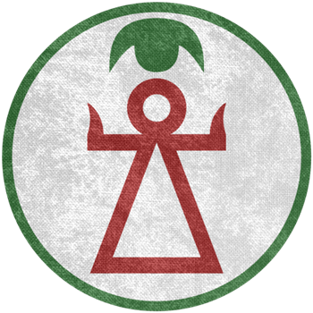
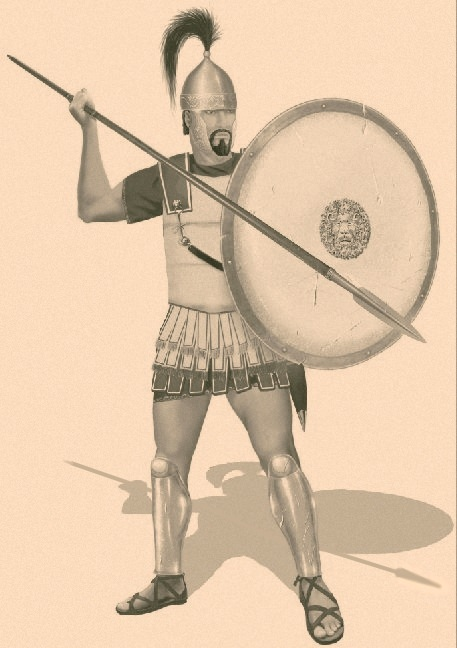
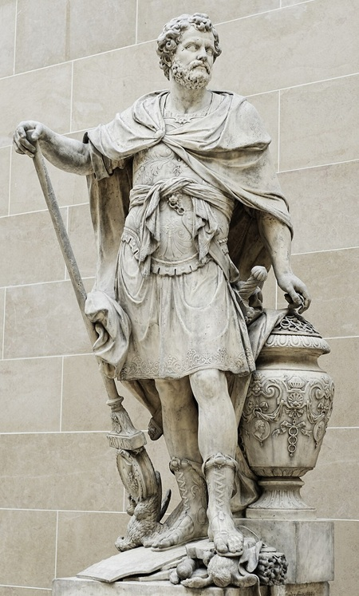

Carthage
Une puissance méditerranéenne
Carthage est, au IIIe siècle av. J.-C., l'une des villes les plus riches et les plus puissantes du monde méditerranéen. Fondée par des colons phéniciens venus de Tyr (actuel Liban), elle s'est imposée comme la grande puissance commerciale de la Méditerranée occidentale, contrôlant les routes maritimes entre l'Afrique du Nord, l'Espagne, la Sardaigne et la Sicile.
La ville est protégée par une triple enceinte de fortifications et peut abriter jusqu'à 700 000 habitants selon certaines estimations antiques. Son port militaire, le Cothon, est un chef-d'œuvre d'ingénierie capable d'accueillir 220 navires de guerre simultanément.
Source : Wikipedia — Carthage
Une économie fondée sur le commerce
Contrairement à Rome qui s'appuie sur l'agriculture et la conquête territoriale, Carthage construit sa puissance sur le commerce maritime. Ses marchands parcourent toute la Méditerranée, échangeant métaux précieux, pourpre, verre, textiles et produits agricoles. Les revenus commerciaux permettent à Carthage de financer ses guerres en payant des armées de mercenaires.
Les sufètes, magistrats suprêmes élus annuellement, veillent à ce que les intérêts commerciaux de la cité soient préservés. La classe des grands marchands exerce une influence considérable sur la politique étrangère et militaire de Carthage.
Source : Wikipedia — Carthage
Carthage face à Rome
La confrontation entre Carthage et Rome est en grande partie une guerre de modèles opposés : une cité commerçante et maritime contre une puissance agraire et militaire. Carthage sous-estime longtemps la capacité de Rome à tenir et à innover. Elle paie cette erreur de jugement de sa destruction.
Malgré sa disparition en 146 av. J.-C., Carthage a laissé une empreinte durable : son alphabet phénicien a influencé le développement des écritures occidentales, ses techniques agricoles ont été traduites en latin et diffusées dans tout l'Empire romain, et son héritage culturel perdure dans toute l'Afrique du Nord.
Source : Wikipedia — Carthage


